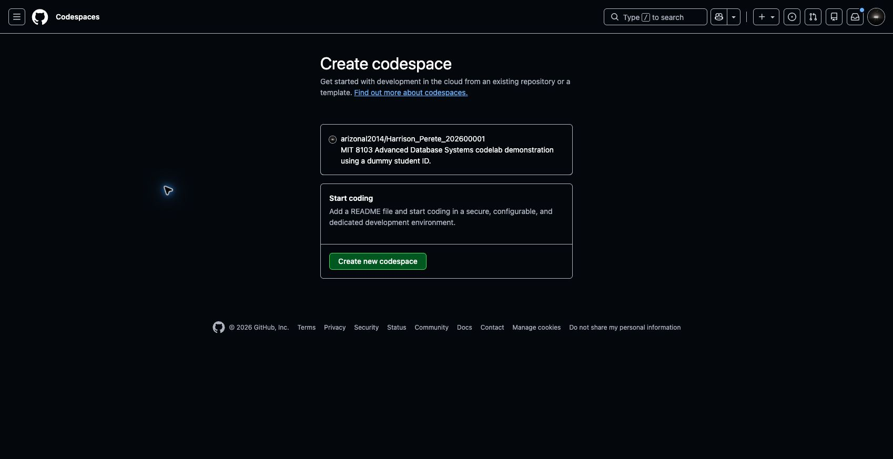
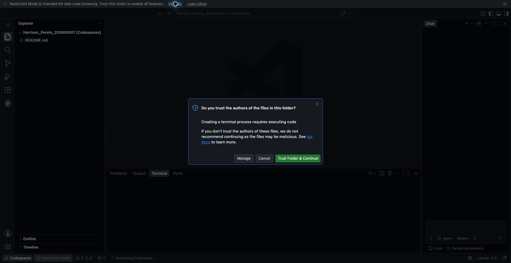
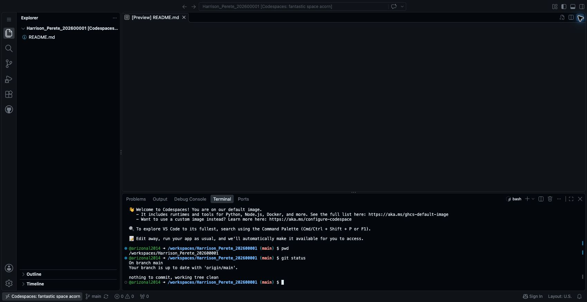

Step 2 Open your workspace in GitHub Codespaces
Codespaces gives you a browser-based editor and terminal. We will use it to create files, run database commands and save changes to GitHub.
This supports Section 5 of the assessment brief: keeping your implementation and evidence in a repository as the work develops.
Open Codespaces
- On the empty repository page from Step 1, click Create a codespace under Start coding with Codespaces.
- Check that the next page shows your account and repository name.
- Click Create new codespace.

- Wait for setup and the remote connection to finish. The first start can take a few minutes.
- If asked Do you trust the authors of the files in this folder?, check that this is the repository you just created, then click Trust Folder & Continue. This enables the terminal for your workspace.

What you should see: the VS Code editor in your browser, with your repository in the Explorer on the left and a Terminal panel below the editor. In our demonstration, GitHub automatically added an initial README.md when opening the empty repository through this route. We will update its name and contents in the next step.
Find your way around
- Explorer: create and open your project files.
- Editor: write SQL, notes and other files.
- Terminal: enter commands and read their output.
- Source Control: review and save changes to GitHub.
- Chat: use GitHub Copilot if it is available on your account.
You can close the Chat panel to give the editor more space. The codelab instructions do not require Copilot.
Check your workspace
Click inside the terminal. If it is not visible, open the application menu in the upper-left corner and choose Terminal → New Terminal.
Run the following commands separately:
pwdThe path should end with your repository name, for example /workspaces/Harrison_Perete_202600001.
git statusThis shows your branch and whether any files have changed.
In the demonstration, the result showed branch main, up to date with origin/main, and nothing to commit, working tree clean.

Your workspace is ready when the terminal path ends with your repository name and git status runs successfully.
Keep the workspace open for the next step. When you finish a practice session, visit Your Codespaces and use the workspace's three-dot menu to stop it. Codespaces has account usage limits; check your allowance if GitHub prevents creation.
Next: Step 3 — Create your portfolio folders and first commit.